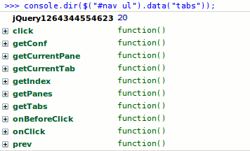

This document describes common practices for each of the tools such as:
Every tool has a well defined Application Programming Interface (API) that you can work with. This is one of the greatest strengths of this library. You can call tool methods and access their properties. The internal state is hidden and private variables are not accessible by the outer world which is what you would expect from good programming practice. You can get access to the API by using jQuery's data method. For example
The argument to the data method is the tool's name. Once you have the API available, you can start calling its methods. For example:
It is natural to have a tool-specific API available when working with a certain widget. There are no redundant methods and typically you won't need, for example, the DOM manipluation methods that jQuery offers. You will want to stick with the methods that relate to the task at hand. There are getters, setters and methods that invoke actions. Invoking methods will always return the API itself so you can perform method chaining. For example:
If your selector returns multiple instances and you want to access a particular API, you can do following:
You can easily see the available API methods a jQuery Tool is using with Firebug. Issue the console.dir(api); command in Firebug's Console. Here is a screenshot:

This provides you with a good source of "documentation".
jQuery UI has a so-called "unified API" which uses the following syntax for invoking methods:
API methods are called by supplying the method name as a string followed by method arguments. This kind of syntax is not supported jQuery Tools. To be honest, I think that this kind API design is fundamentally wrong. It has the following problems:
jQuery Tools versions below 1.2 used an "api" configuration property for accessing the api upon initialization. This property is now deprecated and will be removed in the next version. Also the ability to access the API by calling the tool constuctor again after the initialization is deprecated. The data method will only be supported after the next version.
Every tool is firing events. These are points in time where something critical happens in the tool. For example, scrollable fires the onSeek event every time scrolling occurs. You can supply your own event listeners that are called every time an event occurs. These event listeners are normal JavaScript functions and are the most typical and effective way of extending the behaviour of jQuery Tools. Event listeners are sometimes called callback functions and both are valid terms.
These tools provide both the onBefore event which occurs before some action is taken and the on event that occurs at the time (or after) an action takes place. You can have custom functionality bound to these events. All tools provide such events and they share a common naming policy. The onBefore event provides you with the possibility of cancelling the action.
This example demonstrates the onBeforeClick callback function for Tabs:
There are three different ways of supplying event listeners:
You can supply your event listeners directly in the configuration when the tool is initialized. For example:
This is the most common way to supply callbacks and is suitable for most of the situations. The biggest drawback to this method is that you can supply only one callback for each event. For example, you cannot define two different onClick event listeners in the same configuration.
Note: in the above example the this variable is a reference to the Tabs API.
This is a standard way of assigning callback methods in jQuery land. Here is an example:
The bind method can be called multiple times so you can assign multiple onClick listeners (also known as "chaining"). This is crucial when developing jQuery Tools plugins.
By using the bind method you can use the whole event binding arsenal that jQuery provides such as unbind for removing event listeners and one for calling your listener only once. The jQuery documentation for the bind method is good reading and describes you the basics of event binding. It also talks about advanced topics such as namespacing which are also valid in jQuery Tools.
Inside your event listener the this variable is a reference to the DOM element returned by the jQuery selector just like jQuery programmers are accustomed to.
By far the best thing about the bind method is that you can bind the same event listener to multiple instances with the same call. If for example the selector .tabs in our above example returns multiple instances, the bind method will assign the listener to all instances simultaneously. Also note that bind allows you to supply multiple events types with the same call. For example:
Each jQuery Tool allows you to supply the event listeners from the API. For example:
Inside the event listener the this variable is a reference to the Tools API and you can chain the methods "normally". This syntax follows a more traditional programming style that is more fluent and understandable for people outside the jQuery community.
Every callback function receives the jQuery.Event object as the first argument for the callback function. This event object standardizes the event processing according to the W3C standards. Here are some things you can do with this object:
Within the scope of jQuery Tools, the preventDefault() is identical to returning false from the callback. This is just a matter of style where the preventDefault() is the modern manner of cancelling.
You can get the handle to the actual element that fired the event with var element = e.originalTarget || e.srcElement;. For example, you can get a handle to the scrollable navigator item that was clicked inside the onSeek event.
Some programmers may argue that a better solution would have been to implement "classes" that users can "extend". Trust me, it's not. JavaScript is an inherently functional language, not an object-oriented one. Trying to mimic classical inherintance leads to poor design and makes programs longer and harder to understand. This is especially important in jQuery development because this library itself is highly dependent on callbacks and does not support any kind of inheritance. Functions are an easy, light-weight and effective way of extending behavior. Even newcomers can use them without understanding the anatomy of the JavaScript language.
It is possible to implement jQuery plugins that are tightly integrated with jQuery Tools. These plugins would typically alter the default behaviour of a tool or they can add new functionality. jQuery Tools plugins are authored just like normal jQuery plugins with the exception that inside your plugin you'll get a handle to the Tools programming API and possibly supply callback functions. The fact that the tools can have an unlimited number of callback functions registered is the backbone of plugin development. Here is a simple skeleton for a plugin that will track Google Analytics each time a tab is clicked:
After you have this plugin included on your page, you can use the plugin in the following manner:
If you are a jQuery plugin developer, you can see that this follows the "standard" way of developing plugins. Our setup requires that the tabs are initialized before the analytics plugin, so you cannot write:
Here is a relatively sane writing about developing jQuery plugins. There are many plugins available on the download page. You can take a look at their commented source code to get a better understanding of plugin development.